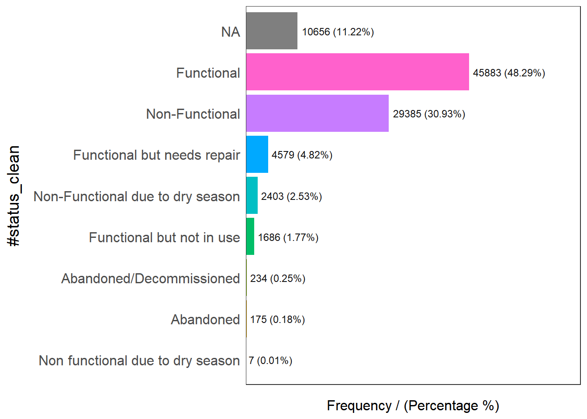
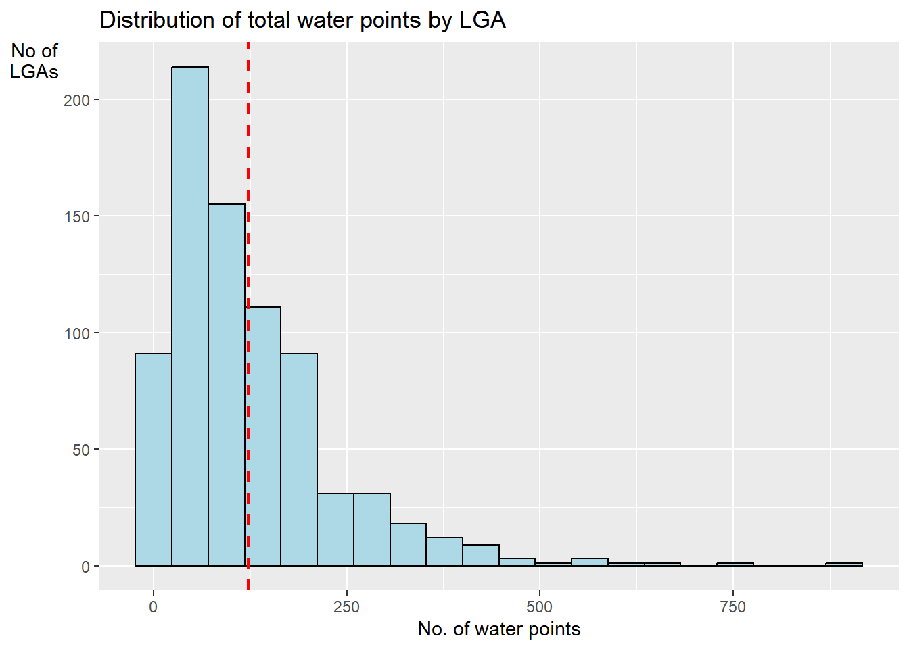

if (!require('pacman', character.only = T)){
install.packages('pacman')
}
library('pacman')1. Background
Water is an important resource to mankind. Clean and accessible water is critical to human health. It provides a healthy environment, a sustainable economy, reduces poverty and ensures peace and security. Yet over 40% of the global population does not have access to sufficient clean water. By 2025, 1.8 billion people will be living in countries or regions with absolute water scarcity, according to UN-Water. The lack of water poses a major threat to several sectors, including food security. Agriculture uses about 70% of the world’s accessible freshwater.
Developing countries are most affected by water shortages and poor water quality. Up to 80% of illnesses in the developing world are linked to inadequate water and sanitation. Despite technological advancement, providing clean water to the rural community is still a major development issues in many countries globally, especially countries in the Africa continent.
To address the issue of providing clean and sustainable water supply to the ruralcommunity, a global Water Point Data Exchange (WPdx) project has been initiated. The main aim of this initiative is to collect water point related data from rural areas at the water point or small water scheme level and share the data via WPdx Data Repository, a cloud-based data library. What is so special of this project is that data are collected based on WPDx Data Standard.
1.1 Objectives
Geospatial analytics hold tremendous potential to address complex problems facing society. In this study, you are tasked to apply appropriate geospatial data wrangling methods to prepare the data for water point mapping study. For the purpose of this study, Nigeria will be used as the study country.
1.2 Task
The specific tasks of this take-home exercise are as follows:
Using appropriate sf method, import the shapefile into R and save it in a simple feature data frame format. Note that there are three Projected Coordinate Systems of Nigeria, they are: EPSG: 26391, 26392, and 26303. You can use any one of them.
Using appropriate tidyr and dplyr methods, derive the proportion of functional and non-functional water point at LGA level.
Combining the geospatial and aspatial data frame into simple feature data frame.
Visualising the distribution of water point by using appropriate analytical visualisation methods.
2. Getting Started
2.1 Installing and Loading Packages
Firstly, the code below will check if pacman has been installed. If it has not been installed, R will download and install it, before activating it for use during this session.
Next, pacman assists us by helping us load R packages that we require, sf, tidyverse and funModeling.
pacman::p_load(sf, tidyverse, funModeling)2.2 Data Acquisition
For the purpose of this exercise, the following public datasets are used:
| Dataset Name | Source |
|---|---|
| WPdx+ (Water_Point_Data_Exchange_-_Plus__WPdx__.csv) | WPdx Global Data Repositories |
| geoBoundaries Nigeria Level-2 Administrative Boundary (geoBoundaries-NGA-ADM2.shp) - UN OCHA CODs | geoBoundaries |
| Humanitarian Data Exchange Nigeria Level-2 Administrative Boundary (nga_admbnda_adm2_osgof_20190417.shp) | Humanitarian Data Exchange |
The data has been extracted to In-Class_Ex02/data/geospatial.
2.3 geoBoundaries Nigeria Level-2 Administrative Boundary Dataset
2.3.1 Importing geoBoundaries Nigeria Level-2 Administrative Boundary Dataset
In the code below, dsn specifies the filepath where the dataset is located and layer provides the filename of the dataset excluding the file extension.
gbnigeria = st_read(dsn = "In-Class_Ex02/data/geospatial", layer = "geoBoundaries-NGA-ADM2")Reading layer `geoBoundaries-NGA-ADM2' from data source
`C:\renjie-teo\IS415-GAA\exercises\In-Class_Ex02\data\geospatial'
using driver `ESRI Shapefile'
Simple feature collection with 774 features and 6 fields
Geometry type: MULTIPOLYGON
Dimension: XY
Bounding box: xmin: 2.668534 ymin: 4.273007 xmax: 14.67882 ymax: 13.89442
Geodetic CRS: WGS 84From the above message, it tells us that the dataset contains multipolygon features, containing 774 multipolygon features and 5 fields in the gbnigeria simple feature data frame and is in the WGS84 geographic coordinates system.
Let us check the other dataset from Humanitarian data exchange.
nigeria = st_read(dsn = "In-Class_Ex02/data/geospatial", layer = "nga_admbnda_adm2_osgof_20190417")Reading layer `nga_admbnda_adm2_osgof_20190417' from data source
`C:\renjie-teo\IS415-GAA\exercises\In-Class_Ex02\data\geospatial'
using driver `ESRI Shapefile'
Simple feature collection with 774 features and 16 fields
Geometry type: MULTIPOLYGON
Dimension: XY
Bounding box: xmin: 2.668534 ymin: 4.273007 xmax: 14.67882 ymax: 13.89442
Geodetic CRS: WGS 84From the above message, it tells us that the dataset contains multipolygon features, containing 774 multipolygon features and 16 fields in the gbnigeria simple feature data frame and is in the WGS84 geographic coordinates system.
By comparing both datasets, the dataset from Humanitarian Data Exchange is more favourable as we can tell which state the LGA area belongs too which will be beneficial for our analysis
2.3.2 Checking the Coordinate Reference System
In the code below, we will check if the Coordinate Reference System has been specified correctly.
st_crs(nigeria)Coordinate Reference System:
User input: WGS 84
wkt:
GEOGCRS["WGS 84",
DATUM["World Geodetic System 1984",
ELLIPSOID["WGS 84",6378137,298.257223563,
LENGTHUNIT["metre",1]]],
PRIMEM["Greenwich",0,
ANGLEUNIT["degree",0.0174532925199433]],
CS[ellipsoidal,2],
AXIS["latitude",north,
ORDER[1],
ANGLEUNIT["degree",0.0174532925199433]],
AXIS["longitude",east,
ORDER[2],
ANGLEUNIT["degree",0.0174532925199433]],
ID["EPSG",4326]]As seen above, the file has been configured correctly, having a WGS84 Geographic Coordinate System which maps to EPSG:4326.
2.3.2 Converting the Coordinate Reference System
In the code below, we will convert the Geographic Coordinate Reference System from WGS84 to EPSG:26391 Projected Coordinate System.
nigeria26391 <- st_transform(nigeria, crs = 26391)st_crs(nigeria26391)Coordinate Reference System:
User input: EPSG:26391
wkt:
PROJCRS["Minna / Nigeria West Belt",
BASEGEOGCRS["Minna",
DATUM["Minna",
ELLIPSOID["Clarke 1880 (RGS)",6378249.145,293.465,
LENGTHUNIT["metre",1]]],
PRIMEM["Greenwich",0,
ANGLEUNIT["degree",0.0174532925199433]],
ID["EPSG",4263]],
CONVERSION["Nigeria West Belt",
METHOD["Transverse Mercator",
ID["EPSG",9807]],
PARAMETER["Latitude of natural origin",4,
ANGLEUNIT["degree",0.0174532925199433],
ID["EPSG",8801]],
PARAMETER["Longitude of natural origin",4.5,
ANGLEUNIT["degree",0.0174532925199433],
ID["EPSG",8802]],
PARAMETER["Scale factor at natural origin",0.99975,
SCALEUNIT["unity",1],
ID["EPSG",8805]],
PARAMETER["False easting",230738.26,
LENGTHUNIT["metre",1],
ID["EPSG",8806]],
PARAMETER["False northing",0,
LENGTHUNIT["metre",1],
ID["EPSG",8807]]],
CS[Cartesian,2],
AXIS["(E)",east,
ORDER[1],
LENGTHUNIT["metre",1]],
AXIS["(N)",north,
ORDER[2],
LENGTHUNIT["metre",1]],
USAGE[
SCOPE["Engineering survey, topographic mapping."],
AREA["Nigeria - onshore west of 6°30'E, onshore and offshore shelf."],
BBOX[3.57,2.69,13.9,6.5]],
ID["EPSG",26391]]After running the code, we can confirm that the data frame has been converted to EPSG:26391 Projected Coordinate System.
2.4 WPdx+ Aspatial Data
2.4.1 Importing WPdx+ Aspatial Data
Since WPdx+ data set is in csv format, we will use read_csv() of readr package to import Water_Point_Data_Exchange_-_Plus__WPdx__.csv and output it to an R object called wpdx.
wpdx <- read_csv("In-Class_Ex02/data/aspatial/Water_Point_Data_Exchange_-_Plus__WPdx__.csv") %>%
filter(`#clean_country_name` == "Nigeria")list(wpdx)[[1]]
# A tibble: 95,008 × 70
row_id `#source` #lat_…¹ #lon_…² #repo…³ #stat…⁴ #wate…⁵ #wate…⁶ #wate…⁷
<dbl> <chr> <dbl> <dbl> <chr> <chr> <chr> <chr> <chr>
1 429068 GRID3 7.98 5.12 08/29/… Unknown <NA> <NA> Tapsta…
2 222071 Federal Minis… 6.96 3.60 08/16/… Yes Boreho… Well Mechan…
3 160612 WaterAid 6.49 7.93 12/04/… Yes Boreho… Well Hand P…
4 160669 WaterAid 6.73 7.65 12/04/… Yes Boreho… Well <NA>
5 160642 WaterAid 6.78 7.66 12/04/… Yes Boreho… Well Hand P…
6 160628 WaterAid 6.96 7.78 12/04/… Yes Boreho… Well Hand P…
7 160632 WaterAid 7.02 7.84 12/04/… Yes Boreho… Well Hand P…
8 642747 Living Water … 7.33 8.98 10/03/… Yes Boreho… Well Mechan…
9 642456 Living Water … 7.17 9.11 10/03/… Yes Boreho… Well Hand P…
10 641347 Living Water … 7.20 9.22 03/28/… Yes Boreho… Well Hand P…
# … with 94,998 more rows, 61 more variables: `#water_tech_category` <chr>,
# `#facility_type` <chr>, `#clean_country_name` <chr>, `#clean_adm1` <chr>,
# `#clean_adm2` <chr>, `#clean_adm3` <chr>, `#clean_adm4` <chr>,
# `#install_year` <dbl>, `#installer` <chr>, `#rehab_year` <lgl>,
# `#rehabilitator` <lgl>, `#management_clean` <chr>, `#status_clean` <chr>,
# `#pay` <chr>, `#fecal_coliform_presence` <chr>,
# `#fecal_coliform_value` <dbl>, `#subjective_quality` <chr>, …Our output shows our wpdx tibble data frame consists of 95,008 rows and 70 columns. The useful fields we would be paying attention to is the #lat_deg and #lon_deg columns, which are in the decimal degree format. By viewing the Data Standard on wpdx’s website, we know that the latitude and longitude is in the wgs84 Geographic Coordinate System.
2.4.2 Creating a Simple Feature Data Frame from an Aspatial Data Frame
As the geometry is available in wkt in the column New Georeferenced Column, we can use st_as_sfc() to import the geomtry
wpdx$Geometry <- st_as_sfc(wpdx$`New Georeferenced Column`)As there is no spatial data information, firstly, we assign the original projection when converting the tibble dataframe to sf. The original is wgs84 which is EPSG:4326.
wpdx_sf <- st_sf(wpdx, crs=4326)
wpdx_sfSimple feature collection with 95008 features and 70 fields
Geometry type: POINT
Dimension: XY
Bounding box: xmin: 2.707441 ymin: 4.301812 xmax: 14.21828 ymax: 13.86568
Geodetic CRS: WGS 84
# A tibble: 95,008 × 71
row_id `#source` #lat_…¹ #lon_…² #repo…³ #stat…⁴ #wate…⁵ #wate…⁶ #wate…⁷
* <dbl> <chr> <dbl> <dbl> <chr> <chr> <chr> <chr> <chr>
1 429068 GRID3 7.98 5.12 08/29/… Unknown <NA> <NA> Tapsta…
2 222071 Federal Minis… 6.96 3.60 08/16/… Yes Boreho… Well Mechan…
3 160612 WaterAid 6.49 7.93 12/04/… Yes Boreho… Well Hand P…
4 160669 WaterAid 6.73 7.65 12/04/… Yes Boreho… Well <NA>
5 160642 WaterAid 6.78 7.66 12/04/… Yes Boreho… Well Hand P…
6 160628 WaterAid 6.96 7.78 12/04/… Yes Boreho… Well Hand P…
7 160632 WaterAid 7.02 7.84 12/04/… Yes Boreho… Well Hand P…
8 642747 Living Water … 7.33 8.98 10/03/… Yes Boreho… Well Mechan…
9 642456 Living Water … 7.17 9.11 10/03/… Yes Boreho… Well Hand P…
10 641347 Living Water … 7.20 9.22 03/28/… Yes Boreho… Well Hand P…
# … with 94,998 more rows, 62 more variables: `#water_tech_category` <chr>,
# `#facility_type` <chr>, `#clean_country_name` <chr>, `#clean_adm1` <chr>,
# `#clean_adm2` <chr>, `#clean_adm3` <chr>, `#clean_adm4` <chr>,
# `#install_year` <dbl>, `#installer` <chr>, `#rehab_year` <lgl>,
# `#rehabilitator` <lgl>, `#management_clean` <chr>, `#status_clean` <chr>,
# `#pay` <chr>, `#fecal_coliform_presence` <chr>,
# `#fecal_coliform_value` <dbl>, `#subjective_quality` <chr>, …Next, we then convert the projection to the appropriate decimal based projection system.
wpdx_sf <- wpdx_sf %>%
st_transform(crs = 26391)3. Geospatial Data Cleaning
3.1 Excluding Redundant Fields
As the wpdx sf dataframe consist of many redundant field, we use select() to select the fields which we want to retain.
nigeria26391 <- nigeria26391 %>%
select(c(3:4, 8:9))3.2 Checking for Duplicate Name
It is important to check for duplicate name in the data main data fields. Using duplicated(), we can flag out LGA names that might be duplicated as shown below:
nigeria26391$ADM2_EN[duplicated(nigeria26391$ADM2_EN) == TRUE][1] "Bassa" "Ifelodun" "Irepodun" "Nasarawa" "Obi" "Surulere"To reduce duplication of LGA names, we will put the state names behind to make it more specific.
nigeria26391$ADM2_EN[94] <- "Bassa, Kogi"
nigeria26391$ADM2_EN[95] <- "Bassa, Plateau"
nigeria26391$ADM2_EN[304] <- "Ifelodun, Kwara"
nigeria26391$ADM2_EN[305] <- "Ifelodun, Osun"
nigeria26391$ADM2_EN[355] <- "Irepodun, Kwara"
nigeria26391$ADM2_EN[356] <- "Ireopodun, Osun"
nigeria26391$ADM2_EN[519] <- "Nasarawa, Kano"
nigeria26391$ADM2_EN[520] <- "Nasarawa, Nasarawa"
nigeria26391$ADM2_EN[546] <- "Obi, Benue"
nigeria26391$ADM2_EN[547] <- "Obi, Nasarawa"
nigeria26391$ADM2_EN[693] <- "Surulere, Lagos"
nigeria26391$ADM2_EN[694] <- "Surulere, Oyo"Let us check now if the duplication has been resolved.
nigeria26391$ADM2_EN[duplicated(nigeria26391$ADM2_EN) == TRUE]character(0)4. Data Wrangling for Water Point Data
4.1 Understanding Field Names
First, let us have a look at the #status_clean column which stores the information about Functional and Non-Functional data points. The code below returns all values that were used in the column.
freq(data = wpdx_sf,
input = '#status_clean')
#status_clean frequency percentage cumulative_perc
1 Functional 45883 48.29 48.29
2 Non-Functional 29385 30.93 79.22
3 <NA> 10656 11.22 90.44
4 Functional but needs repair 4579 4.82 95.26
5 Non-Functional due to dry season 2403 2.53 97.79
6 Functional but not in use 1686 1.77 99.56
7 Abandoned/Decommissioned 234 0.25 99.81
8 Abandoned 175 0.18 99.99
9 Non functional due to dry season 7 0.01 100.00As there might be issues performing mathematical calculations with NA labels, we will rename them to unknown.
The code below renames the column #status_clean to status_clean, select only the status_clean for manipulation and then replace all na values to unknown.
wpdx_sf_nga <- wpdx_sf %>%
rename(status_clean = '#status_clean') %>%
select(status_clean) %>%
mutate(status_clean = replace_na(status_clean, "unknown"))4.2 Filtering Data
With our previous knowledge, we can filter the data to obtain functional proportion counts in each LGA level. We will filter the wpdx_sf_nga dataframes to option functional and non-functional water points.
wpdx_func <- wpdx_sf_nga %>%
filter(status_clean %in%
c("Functional",
"Functional but not in use",
"Functional but needs repair"))
wpdx_nonfunc <- wpdx_sf_nga %>%
filter(status_clean %in%
c("Abadoned/Decommissioned",
"Abandoned",
"Non-Functional due to dry season",
"Non-Functional",
"Non functional due to dry season"))
wpdx_unknown <- wpdx_sf_nga %>%
filter(status_clean == "unknown")4.3 Point-in-polygon Count
Utilising st_intersects() of sf package and lengths, we check where each data point for the water point which fall inside each LGA. We do each calculation separation so we can cross check later to ensure all the values sum to the same total.
nigeria_wp <- nigeria26391 %>%
mutate(`total_wp` = lengths(
st_intersects(nigeria26391, wpdx_sf_nga))) %>%
mutate(`wp_functional` = lengths(
st_intersects(nigeria26391, wpdx_func))) %>%
mutate(`wp_nonfunctional` = lengths(
st_intersects(nigeria26391, wpdx_nonfunc))) %>%
mutate(`wp_unknown` = lengths(
st_intersects(nigeria26391, wpdx_unknown)))4.4 Saving the Analytical Data in rds format
In order to retain the sf data structure for subsequent analysis, we should save the sf dataframe into rds format.
write_rds(nigeria_wp, "In-Class_Ex02/data/rds/nigeria_wp.rds")4.5 Plotting the Distribution of Total Water Points by LGA in Histogram
Next, we will use mutate() of dplyr package to compute the proportion of Functional and Non- water points.
This is given by Functional Proportion = Functional Count / Total Count.
ggplot(data = nigeria_wp,
aes(x = total_wp)) +
geom_histogram(bins = 20,
color = "black",
fill = "light blue") +
geom_vline(aes(xintercept = mean(
total_wp, na.rm = T)),
color = "red",
linetype = "dashed",
size = 0.8) +
ggtitle("Distribution of total water points by LGA") +
xlab("No. of water points") +
ylab("No of\nLGAs") +
theme(axis.title.y = element_text(angle = 0))